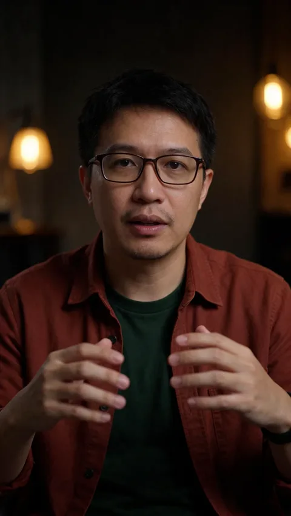

Looks like me, or not
Same tool, same voice. The difference is how the first frame and the prompt are set up.
CJ Chan
Free guide · TWIN
The exact workflow behind the video: one photo, one cloned voice, and a prompt that keeps it looking like you. All 8 steps, the prompts and the reference images are below. Free to read, no email needed.
What the guide fixes
Two of the biggest jumps in quality come from the first frame and the edit.
Same tool, same voice. The difference is how the first frame and the prompt are set up.
The talking clip is the easy part. Captions, cards and motion are what make people keep watching.
The workflow
Why: the AI copies the face in this photo, so give it a clean one. Harsh shadows or a half-smile get copied into every clip. One photo is enough, so skip the extra angles.
Find one image whose style you love. Mine was a dim podcast look: dark background far behind, warm lamp bokeh, soft warm key light, matte skin. Then give that image to ChatGPT or Claude together with this prompt, and it writes the look as an image prompt for you.
Look at the attached reference image and describe its style as one paragraph that I can paste into an image generator as a prompt. Cover: lighting (direction, softness, colour and warmth, any rim or fill light), background and depth (how far behind the subject, how blurred, what the light sources are), lens and framing (shot size, camera height, focal length feel), skin finish (matte or glossy, texture, any shine), film grain and colour grade, and the outfit and pose. Describe the style only, not who the person is. Do not mention brand names or any text in the image. Output one paragraph, no bullet points.
Why: describing a look from scratch is hard, and words like “cinematic” do almost nothing. Copying a look you already like is fast, and the result is specific. The paragraph I got back is the prompt in step 3.
Settings: Seedream 5.5 · 2K · vertical 1536×2720 · reference image: your front photo from step 1. Swap in your own outfit and look from step 2.
Photoreal vertical medium close-up portrait of the person in the reference photo. Face identity must match the reference photo exactly: same face shape, eyes, nose, mouth, facial hair, hair and glasses, real age. Outfit: [your outfit, e.g. rust-red overshirt jacket worn open over a dark forest-green T-shirt]. The person sits facing the camera, chest-up framing with space above the head, hands relaxed at chest height, calm confident expression, mouth slightly open as if about to speak. Setting: a dim, moody room; the background is far behind them and out of focus: dark walls with a few warm amber practical lamps glowing as soft bokeh. Low-key lighting: one soft warm key light from above and to the side on the face and shoulders, gentle shadow on the other side, subtle rim light on hair and shoulders. Matte natural skin with soft texture, no shine, no oily highlights, slight film grain. No microphone, no text, single person, no panels.
Generate a few and pick one. These are my four. Pick the one that looks most like you.

Why dark light: low, warm light and a blurred background hide the small skin flaws AI still makes. Bright flat light shows every one of them.
Zoom in and check the skin before you animate anything. If it looks waxy now, it will look worse in motion.
| Image model I tried | What went wrong |
|---|---|
| Model A | Harsh, over-saturated colours |
| Model B | Plastic, waxy skin |
| Seedream 5.5 | ✓ Natural skin, soft light |
Clone your voice one time. After that, every video is typing, not recording. Speed the voiceover up 1.2x.
Why 1.2x: AI speech at normal speed feels slow and dead on camera. A little faster sounds like someone who knows what they are saying.
Split your script into lines of 10 seconds or less. End each line where a sentence ends.
Why: shorter clips keep the face and lips stable, because long clips drift. And when you cut between clips at a full stop, the join is invisible: a person pauses there anyway.
Settings: Seedance 2.0 Mini · 720p · inputs: the first-frame still from step 3 as Image 1, and that line’s voice clip as Audio 1. No element.
Why the first frame, not an element: I also tried building the person from an element only. Those versions did not look like me. The first-frame still fixes the face, light and outfit before the video starts. See “Not me” vs “Final” in the comparison near the top of this page.
| Model | Skin | Expressions | Cost | Best for |
|---|---|---|---|---|
| Mini | Good | Best | Lower | Talking videos (my pick) |
| Fast | Cleanest | Good | Lower | When skin is the problem |
| Full model | Most like you | Most like you | Higher | Looks the most like you |
Same still, same line. Fast has cleaner skin; Mini moves its face more.
Region note: on Higgsfield, Seedance Mini and Fast show “not available in the US”. Check which models are available where you are before you plan around them.
Tell Seedance what each reference is for: Image 1 controls the face, skin, light and outfit; Audio 1 controls the voice and the words. Then paste your whole line into the prompt. Copy this template and swap in your line:
Vertical medium close-up. The person in Image 1 talks straight to the camera in clear American English, energetic and natural, small hand gestures, small nods. Static camera. No text, no music, no other people. Face, skin and lighting detail: follow Image 1 exactly. Dialogue: speaks English only and says exactly these words from Audio 1: "<your line>", lips synced, same voice. Keep the same person, outfit and room as Image 1 the whole time.
Why paste the line: if you do not, Seedance re-says the line in its own words.
| Line not pasted | Line pasted | |
|---|---|---|
| Words spoken | Seedance’s own version. It may change words or make gibberish | ✓ Exactly your words |
| Captions | May not match what was said | ✓ Match your script |
| Retakes | More | ✓ Fewer |
Talking is the easy part. Add captions, cards and animation on top.
Why: a talking head on its own is one static picture. Captions, cards and motion change what the eye sees every few seconds, and that is what gets people to the end. See “Raw” vs “Edited” near the top of this page.
Still stuck?
Only if you want to. Tell me what you need: an AI twin, a talking video, or a full edit, and I reply by email within 1 business day. Nothing here asks for your email otherwise.